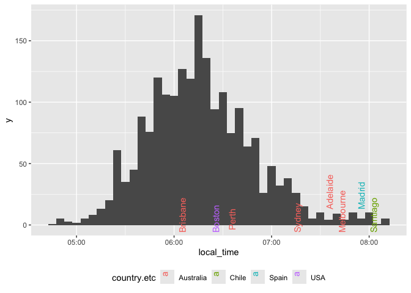
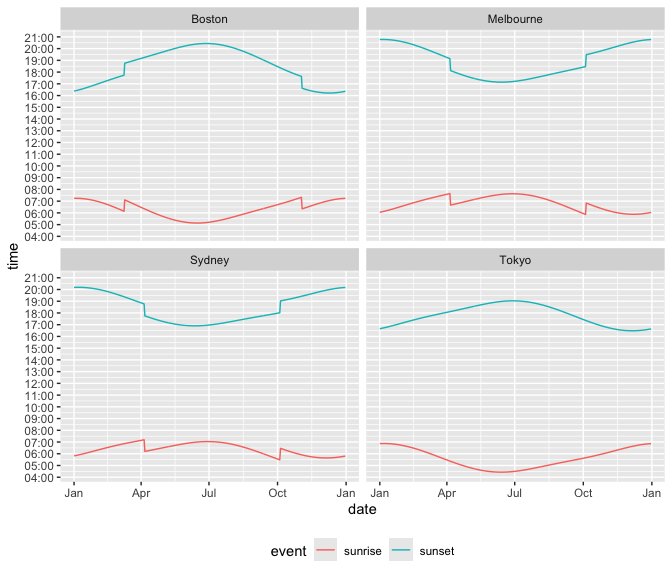

![]()
make_local <- function(time, tz) {
as.character(with_tz(time, tz)) |>
as.POSIXct() |>
strftime(x = _, format = "%H:%M:%S")
}Sunrise and sunset times
Datetimes
Weather
Australia
Melbourne
Boston
the_date <- "2019-04-05"
big_cities <-
world.cities |>
filter(pop > 2e5) |>
mutate(date = as.Date(the_date)) |>
rename(lon = long) |>
mutate(tz = tz_lookup_coords(lat, lon, warn = FALSE)) |>
as_tibble()sunrise_times <-
big_cities |>
getSunlightTimes(data = _, keep = "sunrise") |>
as_tibble()
sunrise <-
big_cities |>
inner_join(sunrise_times, by = join_by(lat, lon, date)) |>
select(name, country.etc, sunrise, date, tz, pop) |>
rowwise() %>%
mutate(local_time = make_local(sunrise, tz)) |>
mutate(local_time = as.POSIXct(paste(date, local_time)))sunrise |>
ggplot(aes(x = local_time)) +
geom_histogram(binwidth = 5 * 60) +
geom_text_repel(data =
subset(sunrise,
name == "Boston" | (pop > 1e6 &
(local_time > as.POSIXct(paste(date, "07:50.00")) |
country.etc %in% c("Australia")))),
mapping = aes(y = 10, label = name, color = country.etc),
angle = 90, vjust = 1, hjust = 1) +
theme(legend.position = "bottom")

the_year <- year(the_date)
sample_cities <-
crossing(
world.cities %>%
filter(name %in% "Tokyo" |
(name %in% c("Boston", "Sydney")
& country.etc %in% c("USA", "Australia")) |
(name == "Melbourne" & country.etc == "Australia")) %>%
rename(lon = long) %>%
mutate(tz = tz_lookup_coords(lat, lon, warn = FALSE)) %>%
as_tibble(),
date = seq(as.Date(str_glue("{the_year}-01-01")),
to = as.Date(str_glue("{the_year}-12-31")),
by = 1))
make_time <- function(a_time, tz) {
res <- strftime(a_time, format="%H:%M:%S", tz = tz)
res <- as.POSIXct(paste("2019-01-01", res))
res
}
sample_cities_times <-
sample_cities |>
getSunlightTimes(data = _, keep = c("sunset", "sunrise")) |>
as_tibble() |>
inner_join(sample_cities, by = join_by(date, lat, lon)) |>
rowwise() |>
mutate(sunrise = make_time(sunrise, tz),
sunset = make_time(sunset, tz))sample_cities_times |>
gather(key = "event", value = "time", sunrise, sunset) |>
ggplot(aes(x = date, y = time, group = event, color = event)) +
geom_line() +
facet_wrap(~ name) +
scale_x_date(date_labels = "%b") +
scale_y_datetime(labels = function(x) strftime(x, format="%H:%M"),
date_breaks = "1 hour") +
theme(legend.position = "bottom")
